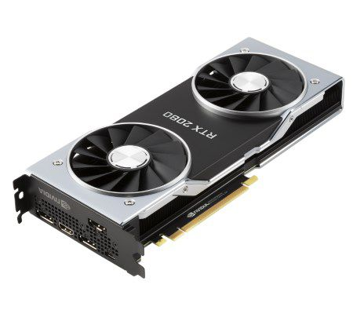

Carte graphique
Si vous cherchez à atteindre un haut niveau de performances avec votre ordinateur, vous devez lui fournir des ressources en adéquation avec vos attentes. Générer des graphismes avec un haut niveau de détail requiert une importante quantité de mémoire pour traiter tous ces détails qui rendent les jeux plus vrais que nature. Plus de RAM est synonyme de plus de puissance graphique pour votre PC gamer. Le prix des cartes graphiques varie énormément en fonction des modèles, et est susceptible de faire sérieusement gonfler votre budget. Si vous recherchez un rendu ultra réaliste qu’une carte graphique haut de gamme propose, assurez-vous de lui offrir la puissance dont elle a besoin pour fonctionner de manière optimale : un processeur puissant, un maximum de RAM et un écran adapté.
